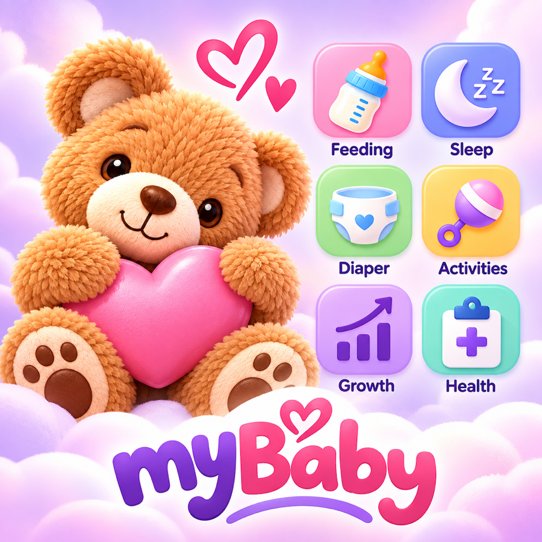

✦
Log the day
Quickly record feeds, sleep sessions, diapers, symptoms, temperatures and notes without losing the moment.
My Baby helps parents and caregivers keep a gentle, useful record of feeds, sleep, diapers, health notes and the everyday rhythm of a growing baby.

Quickly record feeds, sleep sessions, diapers, symptoms, temperatures and notes without losing the moment.
Review history, daily summaries and age-aware suggestions that help you know what happened and what may come next.
Share a baby log with the people who help care for your little one through your private iCloud account.
Use feed reminders when you want them, glance at recent activity in widgets and Live Activities, and keep everything close on your iPhone. My Baby is designed to support your memory—not add another chore.
Your family’s information stays yours.
My Baby has no accounts, ads, analytics or tracking. Your records stay on your device and, when enabled, in your private iCloud.